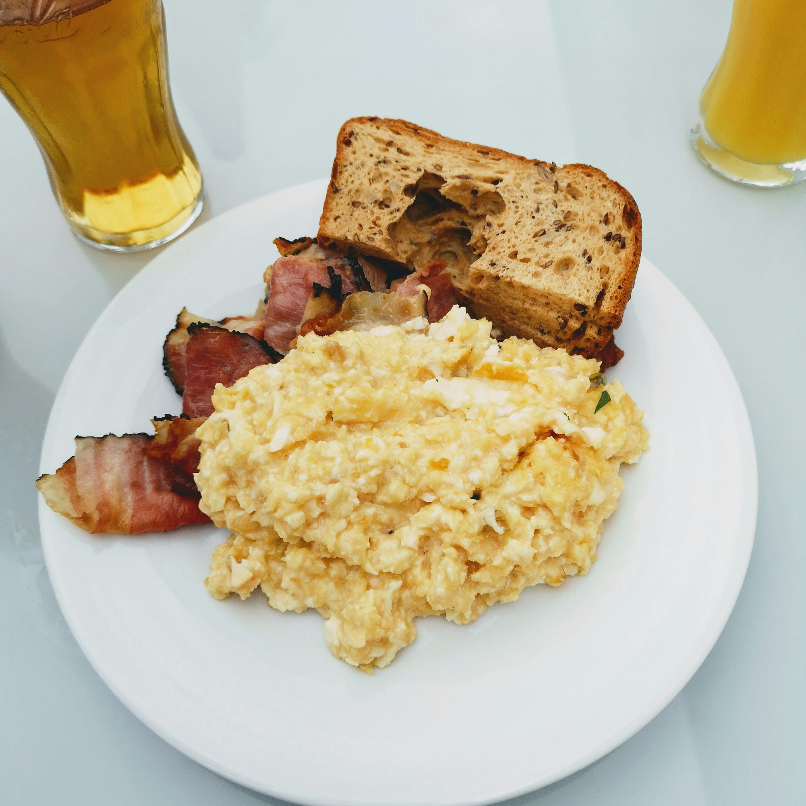

New York Eggs

These eggs are sure to make you rethink what scrembled eggs should be!
Ingredients
- Farm Fresh Eggs
- Milk
- Cream Cheese
- American Cheese
- Salt
- Pepper
- Butter
Steps
- Crack eggs and combine with milk in a small bowl. Add one table spoon of milk per egg used.
- Whisk with for until mixed, and add salt and pepper to taste.
- Heat pan with butter on medium heat. Add eggs to the pan once the butter is melted and pan is hot.
- Cook eggs until just before fully cooked, stirring occasionally.
- Lower heat, and add 1 slice of american cheese and a tablespoon of cream cheese per 2 eggs.
- When cheese is melted, remove from pan, garnish, and enjoy!
Odin's Recipes